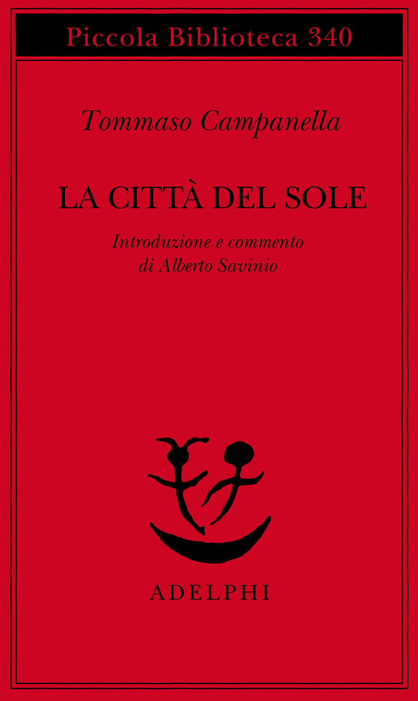

51:50 · 4 OPERE
Animali d'allevamento e ruolo della coscienza individuale.
Il filo del discorso
Il relatore parte dalla rete per interrogare il rapporto fra autonomia e abitudine: scegliere un contenuto, un vestito o un percorso di studi significa sempre decidere liberamente, oppure può riprodurre modelli assorbiti? La critica alla comunicazione breve e alla scuola orientata al risultato apre una difesa del tempo necessario a seguire un discorso. Coleridge e Campanella offrono due immagini del sapere: il racconto che trattiene l’ascoltatore e la città che rende visibili le conoscenze. La riflessione passa poi alla appartenenza ai gruppi, alla forza delle convinzioni e all’antisemitismo. Attraverso i racconti evangelici il relatore rifiuta l’accusa collettiva di deicidio e richiama la necessità di leggere i testi prima di ripetere formule ricevute. La parte finale torna alla situazione mediorientale e al libero arbitrio, con un riferimento polemico al libro di Sapolsky. Il contributo propone tre esercizi: ridurre il protagonismo dell’io, verificare se una affermazione sia vera e lasciare il discorso aperto alla correzione. La scheda distingue questa proposta dalle generalizzazioni sulle persone e precisa che una reazione emotiva non dimostra da sola manipolazione o malattia. Anche le affermazioni sulla storia palestinese e sui territori sono confrontate con documenti: criticare un pregiudizio non richiede cancellare la storia o i diritti di un altro popolo.
I libri nel discorso

La ballata del vecchio marinaio
Copertina: BUR Rizzoli · illustrazioni di Gustave Doré
Coleridge e Ballata del vecchio marinaio espliciti nell’immagine dell’ascoltatore trattenuto dal racconto.
Passaggio 11:42 ↗ · Fonti e libro ↗
La Città del Sole
Copertina: Adelphi, Piccola Biblioteca 340,1995,179 p, ISBN 9788845911118; introduzione e commento di Alberto Savinio. Catalogo corrente nona edizione, distinta dall’ebook 2023. Copertina editoriale autentica; non edizione confermata nel filmato. La presentazione di Savinio risale alla edizione Colombo 1944.
Immagine autentica dell’opera, controllata visivamente; l’edizione di riferimento non è attribuita al filmato.
Campanella e Città del Sole espliciti, con il sapere reso presente sulle mura.
Passaggio 15:50 ↗ · Fonti e libro ↗
Bibbia
Copertina: San Paolo, 2014 · Nuova Versione dai Testi Antichi · edizione di riferimento
Bibbia, Vangeli e sinottici espliciti nel confronto sull’accusa di deicidio.
Passaggio 29:03 ↗ · Fonti e libro ↗
Determined
Identificazione probabile
Copertina: Penguin Books, edizione tascabile, 2024
Copertina di Determined: A Science of Life without Free Will, edizione Penguin Books. Edizione scelta come riferimento iconografico; nessuna edizione è confermata nel video. L’identificazione dell’opera nel video resta probabile.
Sapolsky e libro sulla assenza di volontà autonoma; titolo non pronunciato, identificazione probabile con Determined.
Passaggio 45:07 ↗ · Fonti e libro ↗